목자님, 수고가 많으십니다. 목자 앱은 우리 목장 식구들을 챙기는 일을 휴대폰에서 바로 할 수 있게 만든 앱입니다. 누르는 대로 바로 저장되고, 교역자에게도 자동으로 전해집니다. 따로 보고서를 쓰거나 전화로 알리지 않으셔도 됩니다.
목자 앱으로 하는 일
이 안내서의 그림은 이해를 돕기 위한 예시입니다. 이름은 모두 가상의 이름이고, 실제 화면과 조금 다를 수 있습니다.
1휴대폰에 설치하기 (처음 한 번)
교회에서 카톡으로 보내 드린 우리 목장 링크를 휴대폰 홈 화면에 앱처럼 설치합니다. 한 번만 해 두면 그다음부터는 아이콘만 누르시면 됩니다.
① 카톡에서 링크 누르기
링크를 누르면 카톡 안에서 화면이 열립니다. 카톡 안에서는 설치가 안 되니, 다른 브라우저로 열어 주세요.
- 오른쪽 위 ⋮(점 세 개)를 누릅니다.
- 다른 브라우저로 열기를 누릅니다. 아이폰은 오른쪽 아래 공유 단추를 누른 뒤 Safari로 열기를 고릅니다.
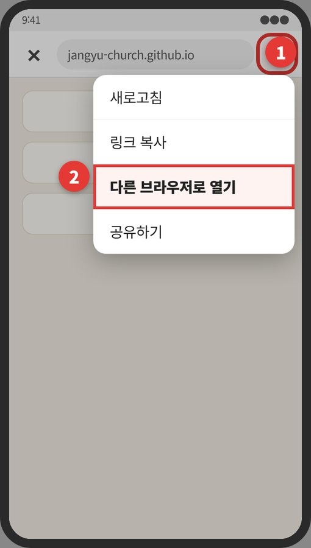
② 갤럭시 – 크롬(Chrome)일 때
- 오른쪽 위 ⋮를 누릅니다.
- 앱 설치를 누릅니다. 안 보이면 홈 화면에 추가를 누릅니다.
- 확인 창에서 설치(또는 추가)를 누릅니다.
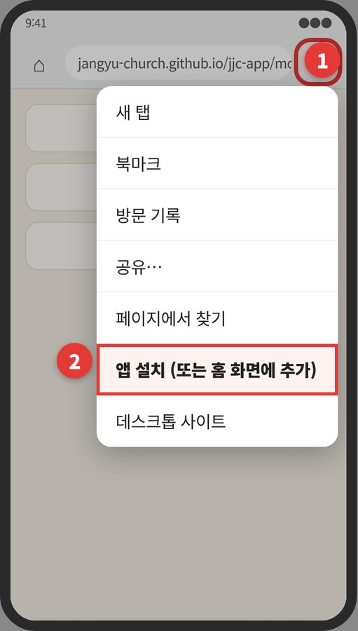
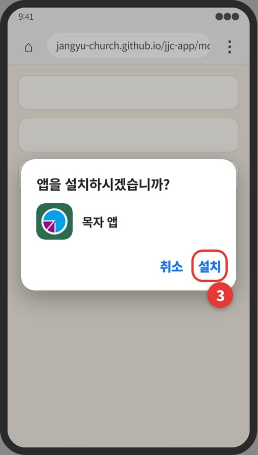
③ 갤럭시 – 삼성 인터넷일 때
- 화면 아래 오른쪽 ≡(줄 세 개)를 누릅니다.
- 현재 페이지 추가(＋)를 누릅니다.
- 홈 화면을 고르고 추가를 누릅니다.
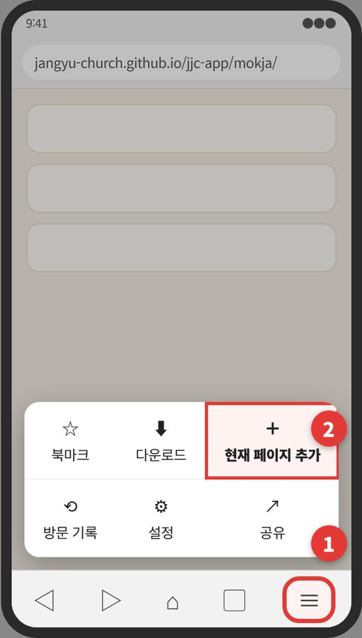
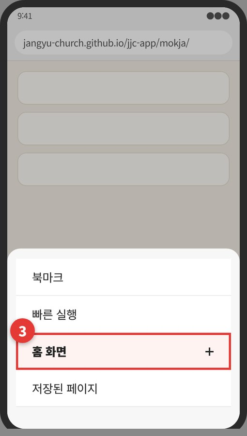
④ 아이폰 – 사파리(Safari)일 때
- 화면 아래 가운데 ⬆︎(공유) 단추를 누릅니다.
- 아래로 내려 홈 화면에 추가를 누르고, 오른쪽 위 추가를 누릅니다.
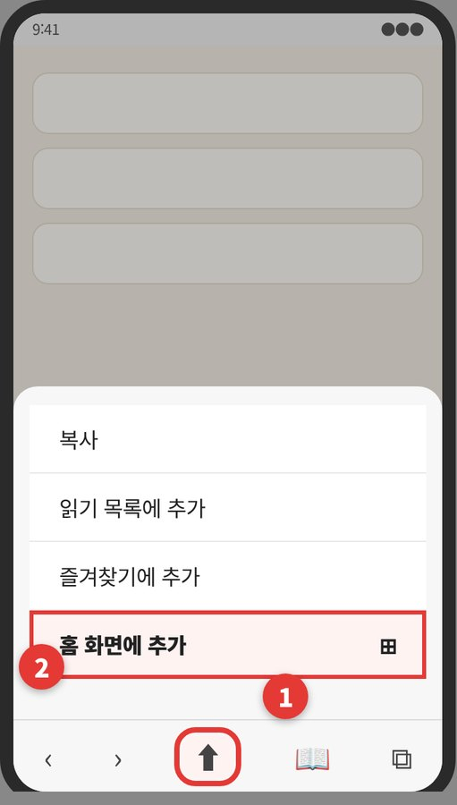
⑤ 완성!
홈 화면에 초록색 「목자앱」 아이콘이 생겼습니다. 이제부터는 이 아이콘을 누르시면 됩니다.
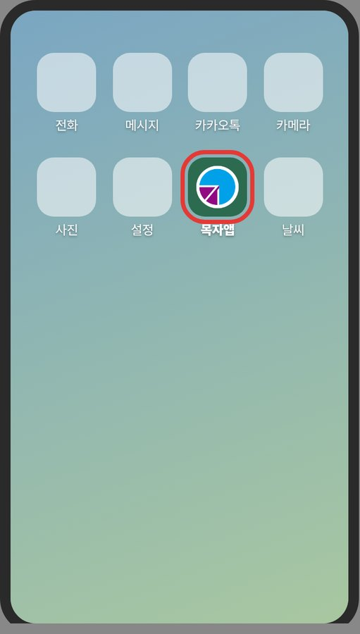
2화면 둘러보기
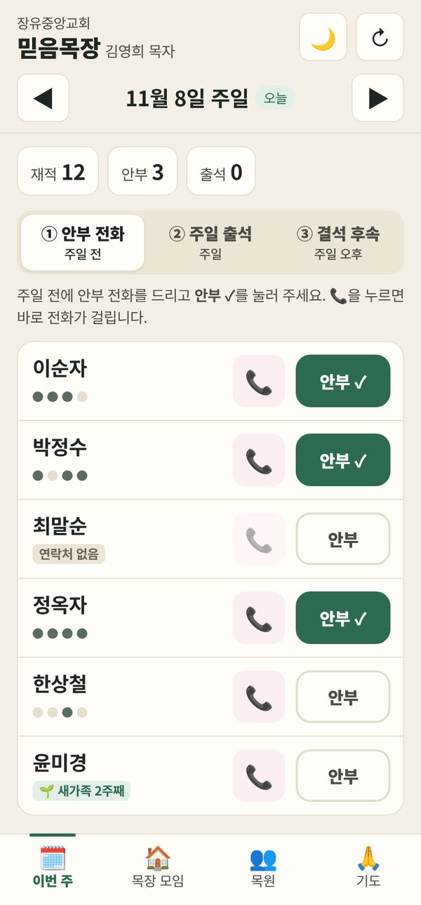
맨 위
- 목장 이름과 목자님 이름이 나옵니다.
- 🌙 밤에 눈이 덜 부시게 화면을 어둡게 바꿉니다. 한 번 더 누르면 밝게 돌아옵니다.
- ↻ 화면을 새로 불러옵니다. 다른 분이 고친 내용이 안 보일 때 누르세요.
- ◀ ▶ 지난주나 다음 주로 넘어갑니다. 날짜 옆 오늘 표시가 이번 주입니다.
가운데 숫자
재적(우리 목장 식구 수), 안부(안부 전화를 드린 수), 출석(주일에 오신 수)이 저절로 셈해집니다.
맨 아래 단추 네 개
🗓️ 이번 주 · 🏠 목장 모임 · 👥 목원 · 🙏 기도를 눌러 화면을 바꿉니다.
3🗓️ 이번 주 — 매주 세 걸음
요일에 맞는 단계가 먼저 열립니다. 위쪽 단추로 언제든 다른 단계로 옮길 수 있습니다.
주일 전 ① 안부 전화
- 분홍색 📞을 누르면 그분께 바로 전화가 걸립니다.
- 통화를 마치면 안부를 누릅니다. 초록색 안부 ✓로 바뀌면 저장된 것입니다.
"연락처 없음"이 붙은 분은 👥 목원 화면에서 연락처를 넣어 두시면 다음부터 📞이 됩니다.
주일 ② 주일 출석
- 주일 예배에 오신 분의 출석을 누릅니다.
- 초록색 출석 ✓로 바뀌면 저장된 것입니다. 따로 저장 단추는 없습니다.
이름 아래 점은 최근 출석입니다. 진한 점은 출석, 연한 점은 결석이나 기록이 없는 주입니다.
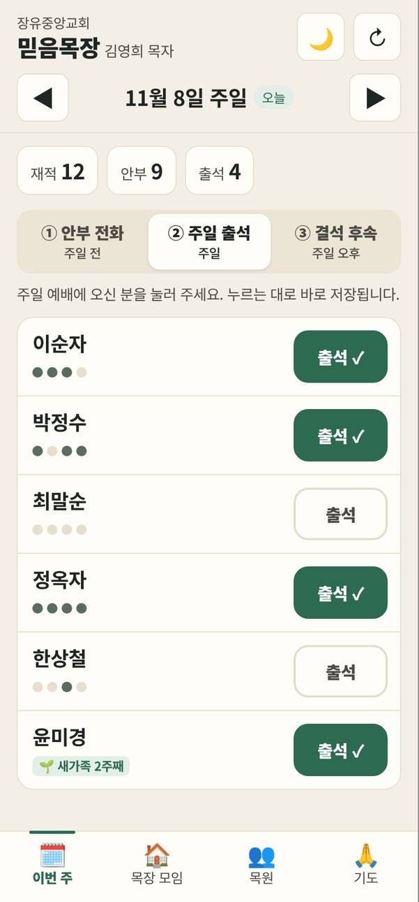
주일 오후 ③ 결석 후속
- 출석 체크를 마치면, 오늘 못 오신 분이 여기에 모입니다.
- 📞으로 안부를 여쭙고, 사유(아파서·근무·여행·외출·가족 행사·연락 안 됨·기타)를 고릅니다.
- 필요하면 짧게 메모를 남깁니다.
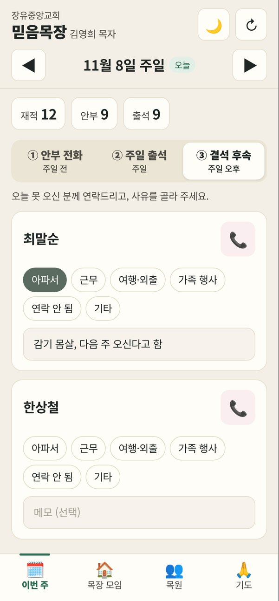
4🏠 목장 모임
📖 이번 주 목장 교재 열기
맨 위 「이번 주 목장 교재 열기」를 누르면 이번 주 목장 모임 교재가 바로 열립니다. 교재 화면 위쪽의 「설교 요약본 보기 →」를 누르면 같은 주 설교 요약본도 볼 수 있습니다. 교재는 목사님이 올리시는 대로 매주 저절로 바뀝니다.
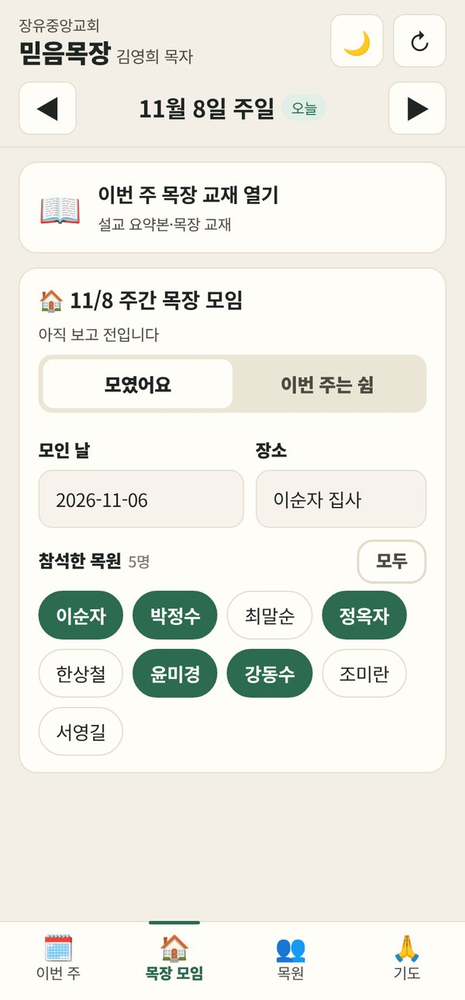
모임 보고 보내기
- 모임을 했으면 모였어요, 쉬었으면 이번 주는 쉼을 누릅니다.
- 모인 날과 장소를 적습니다.
- 참석한 목원 이름을 누릅니다. 초록색이 된 분이 참석한 분입니다. 다 오셨으면 모두를 누르세요.
- 함께 온 손님, 나눈 말씀, 나눔 내용, 목장 기도제목을 짧게 적습니다. 모르는 칸은 비워 두셔도 됩니다.
- 교역자께 부탁하거나 알릴 일은 교역자께 전할 말에 적고, 심방이 필요하면 목사님 심방이 필요합니다에 체크합니다.
- 맨 아래 보고 보내기를 누르면 끝입니다.
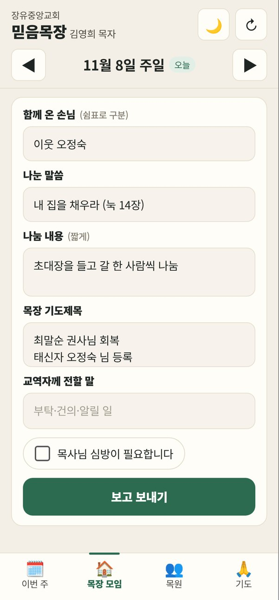
5👥 목원
우리 목장 식구 명단입니다. 📞을 누르면 바로 전화가 걸리고, 위쪽 칸에서 이름으로 찾을 수 있습니다.
이름 옆 표시는 이렇게 읽습니다.
- 🌱 새가족 우리 목장에 새로 오신 분입니다. 몇 주째인지 함께 나옵니다.
- 🙏 태신자 누군가 기도해 온 태신자였던 분입니다.
- 연락처 없음 연락처를 넣어 주세요.
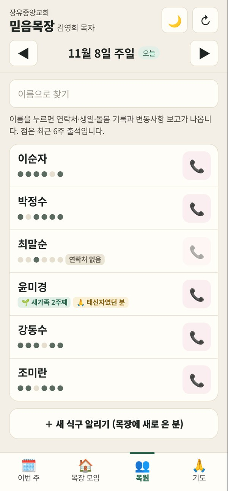
이름을 누르면
- 최근 출석 주일마다 출석했는지 한눈에 보입니다.
- 돌봄 기록 전화·문자·심방·만남 중 하나를 고르고 짧게 적은 뒤 기록 남기기를 누릅니다. 기도제목을 골라 남기면 🙏 기도 화면에 모입니다.
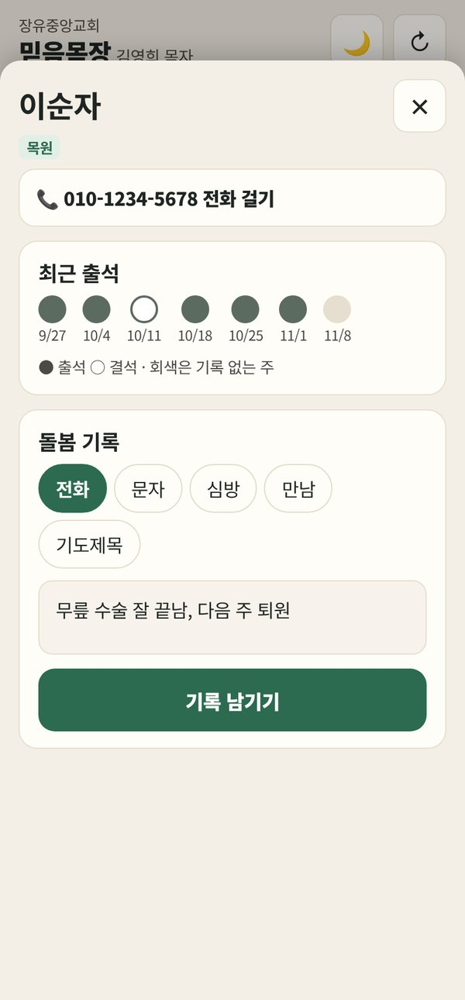
연락처 고치기와 변동사항 보고
- ✏️ 연락처·생일·가족 고치기를 펼쳐 적고 저장을 누릅니다. 교회 목장 명단에도 바로 반영됩니다.
- 입원·출산·장례·이사·목장 옮기기 같은 일이 생기면 📮 변동사항 보고를 펼쳐 종류를 고르고, 내용을 적어 교역자께 보고하기를 누릅니다.
- 목장에 새로 오신 분이 있으면 목원 목록 맨 아래 ＋ 새 식구 알리기를 누릅니다.
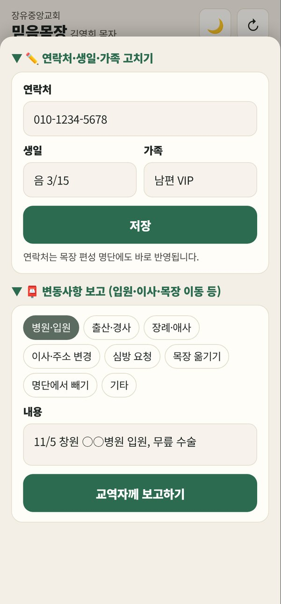
6🙏 기도
- 목원 기도제목 목원 화면의 돌봄 기록에서 [기도제목]으로 남긴 내용이 여기 모입니다. 목장 모임 때 함께 기도하세요.
- 우리 목장 태신자 우리 목원들이 작정하고 기도하는 분들입니다. 누가 기도하는 분인지 함께 나옵니다.
태신자 옆 표시는 이렇게 읽습니다.
- 기도 중 아직 기도하고 있는 분
- 🎉 큰잔치 참석 예수사랑큰잔치에 오신 분
- 📋 ○○목장 명단에 있는 분 이미 목장 식구가 된 분 (기도 응답!)
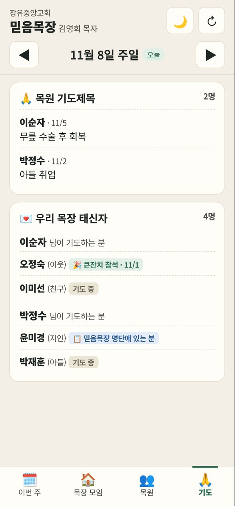
7이럴 땐 이렇게
- 열었는데 "불러오는 중…"만 나와요.
- 처음 열 때는 10~20초쯤 걸립니다. 조금 기다려 보시고, 그래도 안 되면 앱을 닫았다가 다시 여세요.
- "목장 링크로 처음 열어 주세요"가 나와요.
- 카톡으로 받은 우리 목장 링크를 한 번 눌러 열어 주세요. 그다음부터는 아이콘으로 바로 열립니다.
- 아이콘을 지웠어요. / 휴대폰을 바꿨어요.
- 카톡의 우리 목장 링크를 다시 눌러 1장 순서대로 설치하시면 됩니다. 적어 둔 기록은 그대로 남아 있습니다.
- 제대로 저장됐는지 걱정돼요.
- 안부·출석은 누르는 순간 저장되고 초록색으로 바뀝니다. 목장 모임 보고는 「보고 보내기」, 돌봄 기록은 「기록 남기기」를 눌러야 저장됩니다.
- 다른 사람이 제 링크를 알게 됐어요.
- 교역자에게 알려 주세요. 새 링크를 보내 드리고, 예전 링크는 막아 드립니다.
- 지난주 출석을 고치고 싶어요.
- 위쪽 ◀로 지난주로 가서 고치시면 됩니다.
- 그래도 모르겠어요.
- 언제든 교역자에게 전화 주세요. 함께 해 드리겠습니다.